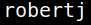
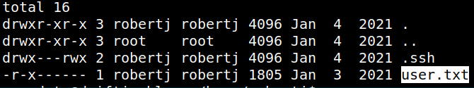

5.2 Enumerate users
1. On the “Reverser shell” run.
www-data@driftingblues:/var/www/html$cd /home
www-data@driftingblues:/home$ls
www-data@driftingblues:/home$ls
Output:

There's an user calld “robertj”.
2. Look into “robertj” directory.
www-data@driftingblues:/home$cd robertj
www-data@driftingblues:/home/robertj$ ls -al
www-data@driftingblues:/home/robertj$ ls -al
Output:

The “user.txt” file doesn't have read permission for other user.
You need to login as “robertj” to access the flag.
There's a “.ssh” directory.